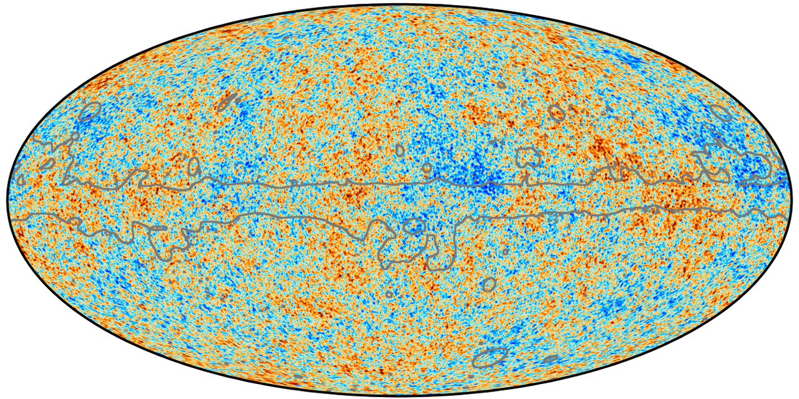

Fond diffus cosmologique
Pourquoi voyons-nous encore une lumière émise il y a 13,8 milliards d'années ?
Les astronomes captent aujourd'hui une lumière émise juste après le Big Bang, il y a 13,8 milliards d'années. C'est surprenant : cette lumière et la matière qui allait former notre galaxie sont nées au même moment, au même endroit. Et rien ne va plus vite que la lumière. Alors comment cette lumière n'est-elle pas partie depuis longtemps, hors de notre portée ? Pourquoi est-elle encore en train de nous arriver ?
Voici la réponse, avec deux animations calculées à partir du modèle cosmologique standard.
Ce qu'on observe
Dans toutes les directions du ciel, on capte un faible rayonnement dans le domaine des micro-ondes, invisible à l'œil nu. On l'appelle aussi rayonnement fossile. Il a trois propriétés remarquables :
- Il est partout. Chaque centimètre cube de l'univers, y compris autour de vous, contient environ 400 de ces photons.
- Il est extrêmement froid et régulier. Sa température est de 2,725 K, soit environ −270 °C. Son spectre est celui d'un « corps noir » parfait, la signature d'un rayonnement émis par une matière en équilibre thermique.
- Il est presque uniforme. Les écarts de température d'un point du ciel à l'autre ne dépassent pas un cent-millième de degré. Ces minuscules irrégularités sont les germes des galaxies.

D'où vient cette lumière
Le fond diffus cosmologique n'a pas été émis au Big Bang lui-même, mais environ 380 000 ans après. Avant, l'univers était un plasma chaud de protons et d'électrons libres, opaque comme un brouillard : la lumière y rebondissait sans cesse. Quand la température est descendue vers 3 000 K, la lumière n'avait plus assez d'énergie pour arracher les électrons aux noyaux. Les premiers atomes d'hydrogène et d'hélium se sont formés, l'univers est devenu transparent, et cette lumière voyage librement depuis. Cette transition, la recombinaison, ne s'est pas faite d'un coup : elle a duré environ 100 000 ans.
La zone d'où partent les photons qu'on reçoit aujourd'hui s'appelle la surface de dernière diffusion. C'est une sphère centrée sur nous, et chaque observateur de l'univers a la sienne. C'est la plus vieille image de l'univers qu'on puisse obtenir avec de la lumière : au-delà, tout est opaque.
Point essentiel : elle a été émise partout à la fois. Le Big Bang n'est pas une explosion en un point d'un espace vide ; c'est tout l'espace qui était chaud et dense. À chaque instant, on reçoit les photons partis d'une région dont la distance est juste celle qu'il fallait pour qu'ils arrivent maintenant. L'an prochain, on verra ceux d'une région un peu plus lointaine.
Et l'expansion peut dépasser la vitesse de la lumière : la limite c vaut pour ce qui se déplace dans l'espace, pas pour l'étirement de l'espace lui-même.
Pourquoi cette lumière n'arrête pas d'arriver
Pensez à un orage avec un long éclair horizontal, de plusieurs kilomètres. Tout l'éclair claque au même instant, et pourtant on n'entend pas un seul « clac » : on entend un tonnerre qui roule pendant plusieurs secondes. Le son de la partie la plus proche arrive en premier, puis celui des parties de plus en plus lointaines.
Le fond diffus, c'est la même chose, en trois dimensions et avec de la lumière. À la recombinaison, tout l'espace émet en même temps. La lumière émise tout près de nous nous a atteints très vite. Celle émise un peu plus loin est arrivée un peu plus tard, et ainsi de suite. Aujourd'hui, ce qui nous arrive vient d'une région juste assez lointaine pour que le trajet ait duré 13,8 milliards d'années. Demain, ce sera une région à peine plus lointaine.
La différence essentielle : l'éclair a un bout, l'univers non
Le tonnerre finit par s'arrêter parce que l'éclair a une longueur limitée. Pour un éclair de 3 km, le son du bout le plus lointain arrive environ 9 secondes après celui du bout le plus proche. Une fois ce dernier son arrivé, il n'y a plus rien en route : le silence revient.
Pour le fond diffus, ce qui a émis la lumière, ce n'est pas un objet posé quelque part : c'est l'univers tout entier, qui remplissait tout l'espace de façon quasi uniforme. Et l'univers n'a pas de bord. On ne sait pas s'il est infini, mais il est en tout cas bien plus grand que la partie qu'on peut observer. Il y a donc toujours une région un peu plus lointaine dont la lumière est encore en route vers nous. Le « bout de l'éclair » n'arrive jamais.
Imaginez un éclair infiniment long : son tonnerre ne s'arrêterait jamais. Il viendrait simplement de parties de plus en plus lointaines, et serait de plus en plus faible. C'est exactement ce qui se passe avec le fond diffus, qui vient d'un peu plus loin chaque jour et refroidit doucement. Le « tonnerre » de la recombinaison roule depuis 13,8 milliards d'années, et il roulera toujours.
On ne cherche donc pas à « rattraper » une lumière partie avant nous : on reçoit en permanence une lumière différente, venue d'un peu plus loin.
Animation 1 — une lumière qui arrive de plus en plus loin
Une coupe de l'univers vue de dessus. Pour se concentrer sur cette idée, l'expansion est mise de côté : chaque point est placé à sa distance d'aujourd'hui. Seuls les photons qui viennent vers nous sont dessinés. Les sources continuent au-delà du cadre, sans fin.
Distance de la région au moment du départ
Distance de cette région à l'instant t
Durée du trajet
Faites défiler le temps : l'anneau orange grandit. À chaque instant, la lumière qui nous arrive vient de cet anneau, jamais du même endroit deux fois.
- Au départ, la région était très proche : la lumière qui nous arrive aujourd'hui est partie d'à peine 42 millions d'années-lumière.
- Mais le trajet a duré 13,8 milliards d'années, parce que l'espace s'est étiré pendant le voyage. C'est ce que détaillent les deux animations suivantes.
- Et ça ne s'arrêtera pas : dans un milliard d'années, on verra encore un fond diffus, venu d'un anneau un peu plus grand.
Animation 2 — le trajet d'un photon
Distance entre nous et un photon du fond diffus, et entre nous et le point d'où il est parti, au fil du temps.
Photon ↔ nous
Source ↔ nous
Fuite de la source
Étirement / température
Distances « propres » (mesurées à l'instant t), en millions d'années-lumière. Le temps avance lentement au début pour détailler les premiers milliards d'années.
- La courbe orange monte d'abord : le photon avance vers nous, mais tant qu'il est au-delà de la sphère de Hubble, l'espace s'étire plus vite qu'il ne le parcourt.
- Vers 4 milliards d'années, elle redescend : le photon atteint sa distance maximale (environ 5 800 millions d'années-lumière), puis se rapproche jusqu'à nous atteindre aujourd'hui.
- La courbe verte ne fait que s'éloigner : la source passe d'environ 42 millions à 46 milliards d'années-lumière, en s'éloignant plus vite que la lumière.
Ce même étirement de l'espace a allongé les longueurs d'onde d'un facteur d'environ 1 100. La lumière d'un gaz à 3 000 K, qui brillait en visible et en infrarouge, nous arrive donc sous forme de micro-ondes à 2,7 K. Et le refroidissement continue : la température du fond diffus baisse d'environ 2 milliardièmes de degré par an.
La sphère de Hubble est le résultat d'un calcul : avec la loi de Hubble v = H × d, c'est la distance où la vitesse d'éloignement égale c, soit R = c / H, environ 14 400 millions d'années-lumière aujourd'hui. Ce n'est pas un objet physique, et comme H change avec le temps, ce rayon change aussi.
Animation 3 — la même chose en 3D
Il n'y a pas de bord de l'univers où poser un observateur. On se place donc au centre de notre sphère observable : ce n'est pas un privilège, n'importe quelle galaxie verrait la même chose autour d'elle. L'espace est en 3D, le temps est la quatrième dimension que vous faites défiler. Faites glisser horizontalement pour pivoter.
⟵Vitesse propre du photon (c, vers nous) ⟶Entraînement par l'expansion
Photons ↔ nous
Sources ↔ nous
Expansion au niveau des photons
Bilan pour les photons
Le cadre zoome automatiquement pour rester lisible : la barre d'échelle en bas à gauche indique la distance réelle au centre du schéma. Les flèches représentent des vitesses, pas des distances : la flèche orange vaut toujours c ; la flèche bleue est l'éloignement dû à l'expansion à cet endroit (plafonnée à 3 c pour rester lisible). Quand la bleue est plus longue que l'orange, le photon recule.
Le satellite Planck
La carte la plus précise de ce rayonnement a été dressée par le satellite Planck de l'Agence spatiale européenne, en service de 2009 à 2013 (ses données ont été exploitées jusqu'en 2018). Il a observé tout le ciel dans neuf bandes de fréquences, puis il a fallu retirer la lumière de notre galaxie et des autres sources pour isoler le fond diffus.
Les infimes variations de température de cette carte sont très riches en informations. Elles ont permis de mesurer :
- l'âge de l'univers : 13,8 milliards d'années ;
- sa vitesse d'expansion actuelle (la constante de Hubble) : environ 67,7 km/s par mégaparsec ;
- sa composition : environ 5 % de matière ordinaire, 27 % de matière noire et 68 % d'énergie noire.
Ce sont ces paramètres qui servent aux calculs des deux animations de cette page.
Ce que le fond diffus a apporté à la science
Cette faible lueur est devenue l'une des sources d'information les plus riches de toute la physique. Voici ce qu'elle nous a appris.
1. L'univers a eu un passé chaud et dense
Un spectre de corps noir aussi parfait n'est possible que si tout l'univers a d'abord été une soupe chaude en équilibre. C'est la preuve la plus solide du modèle du Big Bang ; les modèles d'univers éternel et immuable n'ont pas pu l'expliquer et ont été abandonnés.
2. Un recensement précis de l'univers
Âge, vitesse d'expansion, composition : la carte de Planck fixe ces valeurs à environ 1 % près. Elle montre en particulier que la matière ordinaire, celle des étoiles et de nos corps, ne fait qu'environ 5 % du total. Le reste est de la matière noire et de l'énergie noire, dont on ignore encore la nature.
3. La forme de l'espace
La taille apparente des taches, environ un degré sur le ciel, dépend de la géométrie de l'univers. Elle indique que l'espace est « plat » à quelques millièmes près : deux rayons de lumière parallèles le restent.
4. L'origine des galaxies
Les écarts d'un cent-millième entre zones chaudes et froides sont les germes de toutes les structures. Les simulations qui partent de ces germes et laissent agir la gravité reproduisent la « toile cosmique » de galaxies observée aujourd'hui.
5. De la physique des particules
Le fond diffus « pèse » aussi les particules invisibles du jeune univers. Il confirme l'existence de trois familles de neutrinos et limite la masse totale de ces particules fantômes, ce qu'aucun accélérateur ne sait encore faire aussi bien.
6. Une fenêtre sur la première fraction de seconde
Le ciel a la même température partout, même entre des régions trop éloignées pour avoir jamais échangé de la chaleur. Et ses taches ont presque la même intensité à toutes les échelles. Ces deux faits sont la principale raison de croire à l'inflation, une expansion fulgurante juste après le Big Bang. Le télescope ACT a confirmé en 2025 que ces fluctuations sont presque identiques d'une échelle à l'autre, comme l'inflation le prédit. En revanche, la signature la plus directe de l'inflation, des ondes gravitationnelles primordiales imprimées dans la polarisation du fond diffus, n'a pas encore été détectée.
7. Une énigme toujours ouverte
D'après le fond diffus, l'univers devrait s'étendre aujourd'hui à environ 67 à 68 km/s par mégaparsec. Mais les mesures directes sur les galaxies proches donnent nettement plus : 73,5 km/s par mégaparsec selon la mesure la plus précise, publiée en avril 2026. Cet écart, la « tension de Hubble », résiste à toutes les vérifications. Il pourrait signaler qu'il manque quelque chose à notre modèle de l'univers.
La fresque du temps
Du Big Bang à aujourd'hui, puis vers le futur. L'échelle n'est pas régulière : les premières lignes couvrent des fractions de seconde, les dernières des durées immenses. Pour se repérer, le « calendrier cosmique » ramène les 13,8 milliards d'années à une seule année : le Big Bang au 1er janvier à minuit, aujourd'hui au 31 décembre à minuit.
Avant ?
Il n'existe aucune observation de cette époque, seulement des hypothèses : voir Et avant le Big Bang ?
Ère de Planck
La limite de nos théories : il faudrait une théorie quantique de la gravitation pour décrire cet instant.
Inflation (hypothèse la mieux étayée)
L'espace grossit d'un facteur gigantesque en une fraction de seconde. De minuscules fluctuations quantiques sont étirées : elles deviendront les taches du fond diffus, puis les galaxies.
Naissance des protons et neutrons
Les quarks s'assemblent dans une soupe à des milliers de milliards de degrés.
Formation des premiers noyaux
Hydrogène (environ 75 % de la masse) et hélium (environ 25 %), plus des traces de lithium.
Calendrier cosmique : 1er janvier, 0 h 00
Recombinaison : départ du fond diffus
Les premiers atomes se forment, l'univers devient transparent à 3 000 K. C'est la lumière dont parle cette page.
Calendrier cosmique : 1er janvier, 0 h 14
Âges sombres
Plus de lumière nouvelle : pas encore d'étoiles, seulement du gaz qui se condense lentement autour des zones un peu plus denses.
Premières étoiles
Les premières étoiles et galaxies s'allument. Le télescope James Webb en observe déjà quelques-unes.
Calendrier cosmique : 4 janvier
Réionisation
La lumière des premières étoiles ionise de nouveau le gaz entre les galaxies.
Calendrier cosmique : fin janvier
Naissance de la Voie lactée
Ses plus vieilles étoiles ont environ 13 milliards d'années.
Calendrier cosmique : fin janvier
L'expansion se met à accélérer
L'énergie noire prend le dessus sur l'attraction de la matière.
Calendrier cosmique : fin juillet
Naissance du Soleil et de la Terre
Il y a 4,6 milliards d'années.
Calendrier cosmique : 1er septembre
Aujourd'hui : vous êtes ici
Le fond diffus nous arrive à 2,725 K. Notre espèce existe depuis environ 300 000 ans.
Calendrier cosmique : 31 décembre, 23 h 48 pour Homo sapiens
— LE FUTUR (prévisions) —
La Terre devient trop chaude
Le Soleil brille de plus en plus fort ; les océans finissent par s'évaporer.
Fin du Soleil
Il gonfle en géante rouge, puis devient une naine blanche.
Voie lactée et Andromède
Les dernières mesures de Hubble et Gaia ne donnent plus qu'environ une chance sur deux que les deux galaxies fusionnent d'ici là.
Un ciel qui se vide
L'expansion accélérée a emporté hors de vue toutes les galaxies au-delà de notre groupe local. Le fond diffus s'est étiré en ondes radio, à quelques millièmes de degré au-dessus du zéro absolu.
Les dernières étoiles s'éteignent
Il ne reste que des restes d'étoiles et des trous noirs.
Les trous noirs s'évaporent
Selon Hawking, même les trous noirs finissent par disparaître. Il ne reste qu'un univers froid, sombre et presque vide.
Et avant le Big Bang ?
Dans le modèle actuel, le « Big Bang » désigne l'état très chaud et très dense d'où tout est parti, pas forcément un commencement. Si l'on remonte le temps avec nos équations, on arrive à une densité infinie, une singularité : ce n'est pas une description de la réalité, c'est le signe que la théorie ne s'applique plus. Pour aller plus loin, il faudrait unir la relativité générale et la mécanique quantique, ce que personne n'a encore réussi. Plusieurs pistes existent, toutes non confirmées :
- Pas d'« avant » du tout. Dans la proposition « sans bord » de James Hartle et Stephen Hawking, le temps se comporte près de l'origine comme une dimension d'espace. Demander ce qu'il y avait avant reviendrait à demander ce qu'il y a au nord du pôle Nord.
- L'inflation éternelle. L'inflation ne se serait jamais arrêtée partout à la fois. Notre univers serait une « bulle » où elle a cessé, parmi une infinité d'autres : c'est l'une des versions du multivers.
- Le grand rebond. Un univers précédent se serait contracté jusqu'à une densité extrême, puis aurait rebondi pour donner le nôtre. Certaines théories de gravitation quantique, comme la gravitation quantique à boucles, remplacent ainsi la singularité par un rebond.
- Les univers cycliques. Dans le modèle « ekpyrotique » de Paul Steinhardt et Neil Turok, le Big Bang serait la collision de deux « membranes » dans des dimensions supplémentaires, répétée de cycle en cycle. Dans la cosmologie conforme cyclique de Roger Penrose, la fin infiniment diluée d'un univers deviendrait le Big Bang du suivant ; Penrose a cru en voir des traces dans le fond diffus, mais ces signaux sont très contestés.
Le fond diffus reste notre meilleur outil pour trancher. Si l'on détecte un jour les ondes gravitationnelles primordiales dans sa polarisation, ce sera un argument fort pour l'inflation, et cela exclurait les modèles ekpyrotiques, qui n'en prédisent presque pas. C'est l'un des objectifs principaux des prochaines générations de télescopes.
Pour aller plus loin
- Fond diffus cosmologique (Wikipédia)
- A Journey of Light Through Space and Time (NASA/JPL)
- How the Universe expands (ESO)
- This Thing is −270°C and is EVERYWHERE (PBS, en anglais)
- Le fond diffus cosmologique et les grandes structures de l'univers (conférence BnF)